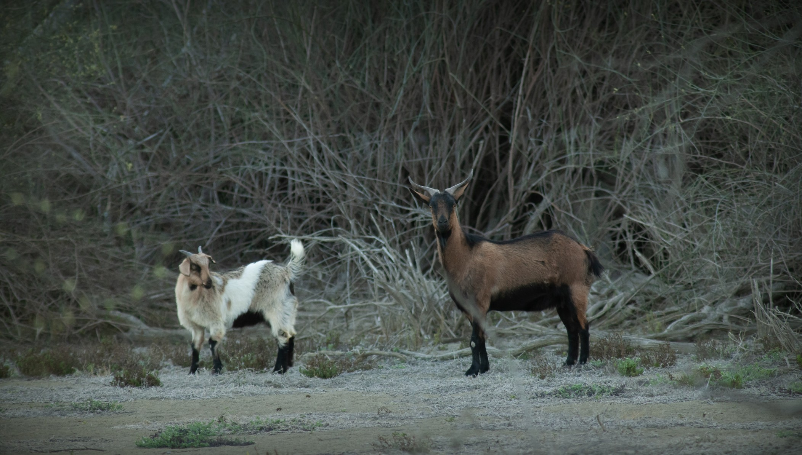

This interactive map shows a grazing pressure index across the Living Landscape study region in the South Australian mallee.
The grazing pressure index was estimated from the spatial distribution and persistence of pastoral dams detected using Sentinel-2 remote sensing. Artificial water points were treated as sources of grazing pressure, with pressure declining with distance from each dam and weighted by the proportion of time that water was detected.
Higher values indicate areas expected to experience greater livestock grazing pressure because they are closer to more persistent pastoral water sources. Lower values indicate areas farther from persistent water points and therefore areas inferred to have experienced lower relative grazing pressure.
This map is intended as a broad-scale decision-support output. It represents inferred relative grazing pressure associated with artificial water points, and should be interpreted alongside field validation, local ecological knowledge, management history, seasonal conditions and the limitations of remotely sensed water detection.
This project was supported by funding from the Australian Government’s National Environmental Science Program through the Resilient Landscapes Hub. We acknowledge the Traditional Owners of Country throughout Australia and their continuing connection to land, sea and community, and pay our respects to Elders past and present.